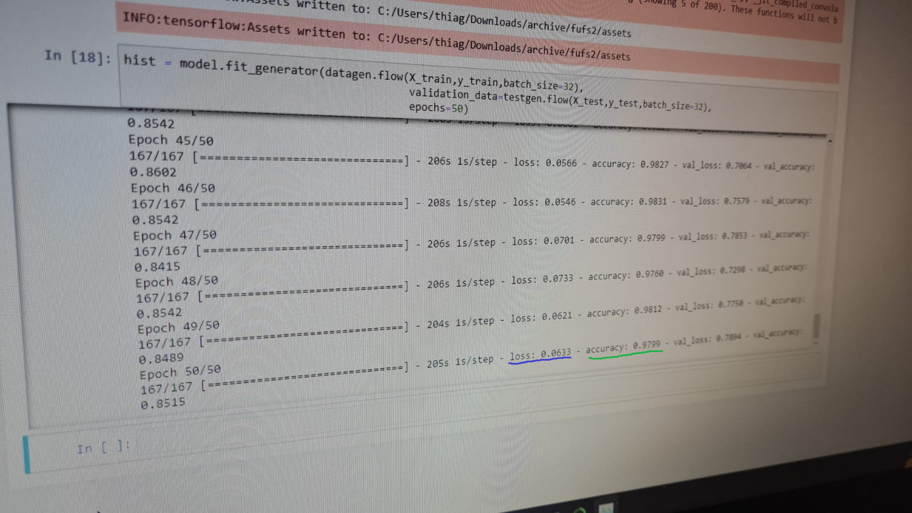

IMPLEMENTAÇÃO
Aplicação do CNN no projeto...
CRIAÇÃO DE MODELO
A criação da arquitetura de um modelo é uma das partes mais fundamentais para comecar o treinamento de uma rede neural convolucional. Nos no nosso projeto utilizamos um modelo sequencial que é basicamente um pilha linear de camadas. esse modelo cria diversas camadas de uma imagem, analisa e depois as compara para obter um resultado. No modelo sequencial existem alguns parametros importantes para o seu preparo, um deles é o conv2D que basicamente cria um kernel de convolução que serve como entrada de camadas que ajuda a produzir uma saida mais organizada, o proximo é o Dense, ele é usado para classificar a imagem baseado no output da conv2D. Existem vários outros parametros mas, esses 2 são os mais comuns e úteis
RESULTADOS
Resultado das aplicações no projeto
FUNCIONAMENTO DO BOT
Um bot é um software criado por terceiros, que funciona com o Discord graças à API aberta da plataforma discord.py . Cada bot pode contar com uma série de funcionalidades diferentes, que podem ser úteis até para quem não joga, e procura um software mais versátil para conversas em áudio, vídeo e texto.
Para conseguirmos brincar com o PokeBot , precisamos usar o comando: >pred , a maneira correta de usa-lo é digitar o comando, logo em seguida colar a imagem na caixa de texto e enviar. Essa instrução armazena a imagem que foi mandada no chat, joga para o teste de predição da I.A e assim, retorna em forma de mensagem, a predição da I.A (o que ela supõe ser aquela imagem)segue o exemplo:
RESULTADO DOS EPOCHS E PREDIÇÕES
Uma "EPOCH" é basicamente um ciclo através do conjunto de dados de treinamento completo. Normalmente, o treinamento de uma rede neural leva mais do que algumas épocas. Em outras palavras, se alimentarmos uma rede neural com os dados de treinamento por mais de uma época em diferentes padrões, esperamos uma melhor generalização quando colocarmos algum dado de teste, quanto mais EPOCHs tivermos, mais preciso vai ser a predição da noss IA

Na imagem acima, temos uma foto que retiramos durante o treinamento da IA, nela podemos encontrar os 50 epochs (número de iterações), a taixa de LOSS e de ACCURACY, mas o que elas significam?
Taixa de LOSS é basicamente uma função que calcula a perda entre o valor observado e o valor estimado, ou seja, uma função que calcula a "média" dos erros entre a comparação da imagem mandada pelo usuário e a imagem que ja estava setada no dataset.
Já a taixa de ACCURACY, se trata da taixa de Aprendizado da IA, que indica o ritimo que os pesos são atualizados, caso ele acerte ou não. Tanto a taixa de acerto, quanto a taixa de perda, voltam para a rede neural, onde os pesos vão ser recalculados, seguindo assim até o numero de EPOCHs acabar.
Agora, o que são as PREDIÇÕES? São previsões, em porcentagem, das taixas de acerto dos dados no dataset, segue um exemplo:
Nesse exemplo acima, podemos ver alguns pokémons e suas respectivas precisões, ou seja, quanto mais próximo do 1, mais preciso o nosso bot está para aquele determinado pokémon. Óbviamente que nossa IA não está 100% treinada, gastamos aproximadamente 15h com os testes de 50 "EPOCHs cada, caso deixássemos treinando por mais horas, as precições iriam estar maiores, sendo assim, a taixa de acerto também!
REALIZADO POR:
Quem faz parte desse projeto...

DANIEL MELO

JOAO VITOR PERES
MATTEO HERNANDEZ